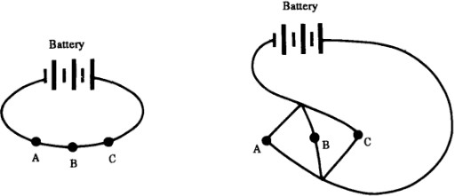
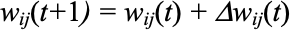

8Inteligencia artificial, semiosis y sistemas complejos
Autor/a
Afiliación
Mariana Olezza
IIEP UBA-CONICET
Resumen
“Se analizará el concepto de semiosis en la Inteligencia Artificial (IA), desde un punto de vista de los sistemas complejos (SC). Se mantendrá que Charles Sanders Peirce (1839–1914) cuando hablaba de sistemas semióticos, se refería principalmente a SC.
Peirce no le atribuía procesos semióticos a las máquinas lógicas al no considerarlas ‘espontáneas’, característica fundamental de los SC (en lenguaje de SC las llamaríamos ‘autoorganizadas’). Cuando veamos las más sofisticadas como redes neuronales artificiales (RNA), veremos que simulan muchas características de los SC: No tienen control central, tienen partes interconectadas, reglas simples, robustez, aprendizaje, retroalimentación, pero siguen sin poseer la característica de la autoorganización.”
Vamos a dejar de lado algunos sistemas complejos en particular como el clima, que no son semióticos, indicado en el diagrama de Venn. Luego tenemos sistemas semióticos complejos y no complejos. Vamos a ir analizando sus diferencias.
En el proceso semiótico, el signo está en lugar de un objeto, para un interpretante. Por ejemplo: El objeto podría ser una manzana, el signo la palabra “manzana”, y el interpretante es mental que procesa la información, interpretándola. Esto forma la tríada. Esto está conforme al pensamiento de los clásicos como Umberto Eco (1976), quienes mantienen un “umbral semiótico” relativamente alto para el interpretante, en la línea antropomórfica. ¿Pero hasta dónde la podemos bajar?¿Un animal interpreta? Los zoosemióticos dirían que sí ¿Un insecto como una abeja?¿Un microorganismo? Los biosemióticos estarían de acuerdo. Peirce era bastante pansemiótico y pensaba que sí, que todos estos sistemas tenían la capacidad de la interpretabilidad.
Hablaba de sistemas como distintos tipos de organismos, como microorganismos (CP 1.269), el trabajo de las abejas (CP 4.551), las células de una rana decapitada (CP 1.390, CP 6.144, CP 2.711), la evolución biológica (CP 7.409), entidades primitivas de protoplasma (CP 6.283, CP 7.364), y el ser humano en general. Todos notablemente SC. “El problema de la complejidad, yace en el corazón de su pensamiento” Nubiola (2001), quien ofrece ejemplos como el caso del protoplasma y otros extractos donde Peirce habla de la complejidad en general: “Las propiedades típicas del protoplasma, "contractilidad, irritabilidad, automatismo, nutrición, metabolismo, respiración y reproducción [...] pueden resumirse bajo los términos de sensibilidad, movimiento y crecimiento."" (CP 1.393, 1887-88; citado en (Nubiola 2001, 5)) Sin embargo, siempre se cuidaba de dejar a las máquinas lógicas determinísticas fuera, y decir que ellas no interpretaban nada. Qué allí solo había un”quasi-signo”. ¿Por qué hacía hincapié en esto? Peirce veía que estas máquinas no poseían “espontaneidad”, es decir, lo que hoy llamaríamos, autoorganización, característica fundamental de los SC.
“Cada máquina de razonamiento, lo que es decir, cada máquina, tiene dos impotencias inherentes. En primer lugar, no tienen originalidad, ninguna iniciativa. No pueden encontrar sus propios problemas; no se pueden alimentar a sí mismas. (...)” [Itálicas añadidas] (Peirce 1887)
En este fragmento podemos ver como Peirce hace referencia a la inherente falta de espontaneidad de las máquinas. Si lo pensamos bien, hacer referencia a la falta de autoorganización, o decir que no tienen ninguna iniciativa, se relaciona con la idea de determinación. Peirce dice que estas máquinas son deterministas. Si pensamos en la tercera antinomia kantiana, la de “indeterminismo vs. determinismo”, Peirce le adjudica deterministas a las máquinas y por contraposición indeterministas a los SC.
“En segundo lugar, la capacidad de una máquina tiene limitaciones absolutas. Está hecha para hacer una sola cosa y no puede hacer nada más. Por ejemplo, las máquinas lógicas que han sido desarrolladas pueden manejarse con una cantidad fija de letras. La mente sin ayuda puede presentar limitaciones similares, pero con ayuda de papel y lápiz no tiene tal limitación (...)” (Peirce 1887)
En este otro fragmento Peirce se queja de que las máquinas lógicas de su tiempo tienen determinada cantidad de operandos para ser manejadas y nada más, como con las máquinas de Jevons y Marquand, alumno suyo.
Sistemas semióticos “no complejos”
Luego tenemos los sistemas semióticos no complejos, por ejemplo el código binario: El código que es un sistema semiótico utilizado en informática, compuesto por los dígitos 0 y 1 para representar información en formato binario. Es la base de la informática digital, pero no es inherentemente complejo por sí mismo.
Luego tenemos el Braille, sistema semiótico táctil utilizado por personas con discapacidad visual para leer y escribir. Está compuesto por puntos elevados dispuestos en patrones que representan letras, números y otros símbolos. Aunque permite la transmisión de información textual compleja, el sistema en sí no es complejo. También está el caso de la notación musical, utilizada para representar la música en papel.
Estos ejemplos demuestran que los sistemas semióticos pueden ser relativamente simples en su diseño y funcionamiento, aunque pueden utilizarse para transmitir información o significados complejos cuando se aplican en diversos contextos.
¿Pero qué no los hace complejos como en el caso de una mente de un ser humano interpretando el signo de la palabra (por audición por ejemplo) manzana del objeto manzana?
Éstos sistemas, son estáticos hasta que llegue alguien que los interprete. Son diádicos, tienen un objeto (ejemplo la música) y el signo (la notación), pero están en un papel y les falta un interpretante. De modo que a la primera que haya un interpretante dispuesto a interpretar el código binario, o el braille, o la notación musical, se forma la tríada y se vuelve un sistema complejo. Hasta entonces, son papeles en la mesa.
Máquinas deterministas: Jevons y Marquand
El “piano lógico” de Jevons estaba diseñado para reducir expresiones booleanas complejas. Utilizaba un alfabeto de cuatro términos (una limitación importante). Del lado del profesor, estaban colocadas las teclas que consistían en los cuatro términos A, B, C y D y sus negaciones a, b, c, d, (al estilo de De Morgan señalando las negaciones con minúscula). Luego se tenía la operación OR, la igualdad, “full stop” para completar una proposición y “finis” para terminar de ingresar todas las proposiciones y procesar la respuesta. Esta respuesta aparecía a ambos lados del “piano lógico”, para que la viesen alumnos y profesor.
En el “piano lógico” no existía un procedimiento eficiente para ingresar las fórmulas a las máquinas, uno estaba limitado al uso de solamente cuatro términos, y lo más grave de todo era que no desarrollaba el paso adicional de analizarlas para obtener la conclusión deseada, es decir el proceso de analizar las combinaciones para determinar cuáles términos son verdaderos y cuáles falsos o encontrar la conclusión de un silogismo.
Marquand, que había sido alumno de Peirce en la universidad Johns Hopkins, diseñó en 1881 una máquina lógica que era superior a la de Jevons, para mostrar silogismos lógicos. Construyó una máquina que podía procesar hasta diez términos (y luego otra más chica que podía procesar cuatro). De acuerdo a Buck y Hunka (1999), Marquand desarrolló la primera versión de la máquina lógica para luego pensar en desarrollar una versión electromecánica–idea que le sugirió Peirce–, que reproduciría la operación de la máquina tradicional, que sin embargo nunca fue implementada. Peirce le comentaba en una carta a Marquand fechada el 30 de diciembre de 1886:
“Hablaste, cuando te vi, como decepcionado por la recepción de tu máquina. Me gustaría poder verla. Mi impresión es que tiene dos defectos; primero, solo se extiende a cuatro términos en vez de seis como debería, y en segundo lugar no reduce la operación a la más simple expresión. Debería ejecutar 4 operaciones o 3 al menos. Primero debería desarrollar cualquier expresión como \(a\) hacia \(abcdef + abcde\bar{f} + abcd\bar{e}f + etc\)
En segundo reducir expresiones de modo \(abcdef + abcde\bar{f} + abcd\bar{e}f\) hacia la expresión: \(abcde + abcdf\).
En tercer lugar, debería multiplicar dos polinomios desarrollados, si no es que dos. En cuarto lugar si bien no es necesario, sería bueno que pudiera sumar. Creo que deberías volver al problema, especialmente ya que no es tan imposible hacer una máquina para problemas matemáticos muy difíciles. Pero tienes que proceder paso a paso. Creo que la electricidad sería lo mejor en lo que podrías basarte.” [Itálicas añadidas] (C.S. Peirce, 1886)
En la siguiente ilustración Peirce le muestra a Marquand dos circuitos: uno en serie (funciona como multiplicación en lógica, deben estar todas las puertas cerradas, AND) y uno en paralelo (funciona como suma en lógica, debe haber al menos una puerta abierta para que pase la corriente, OR).

Peirce pensaba en la semiosis como algo presente en microorganismos, en las abejas, células, y en el ser humano, pero no así en las máquinas lógicas. ¿Cómo caracterizamos la semiosis entonces?
Vamos a analizar un poco en esta sección el mundo de los SC (en especial los adaptativos (CAS), que suelen estar relacionados con la vida, aunque no necesariamente). Los CAS están compuestos de elementos, llamados agentes, que aprenden o se adaptan en respuesta a las interacciones con el ambiente y otros agentes.
Los SC exhiben la propiedad de la emergencia, que puede ser descripta como que “el todo es más que la suma de las partes”. Pero vamos a ahondar un poco más en este concepto, ya que se relaciona con otro concepto de los SC que es la característica de la jerarquía. Pongamos un ejemplo sencillo dentro del cuerpo humano extraído de (Holland 2014, 84):
“1. Los cromosomas, a través de un aparato de traducción, generan las proteínas que sirven como agentes de bajo nivel (catálisis, señales, etc.) 2. Las proteínas se combinan para formar membranas cerradas en organelas que actúan como agentes para el procesamiento de más alto nivel. 3. Las organelas se combinan para formar células 4. Y así sucesivamente, a través de los órganos, organismos, poblaciones coevolutivas, etc.”
Tales procesos jerárquicos caracterizan a los CAS. Además están autoorganizados, y sin un controlador central. Pueden llegar a desplegar un comportamiento caótico (muy sensible a las condiciones iniciales), y poseen aprendizaje. Además de componerse de reglas simples, ser no lineales y robustos. De todas formas no hay una definición cabal de SC. Vamos a guiarnos por sus características principales siguiendo a Holland (2014) y a Mitchell (2011).
Volviendo a los CAS y su relación con el entorno, el agente posee un conjunto de detectores que traduce las actividades del ambiente en señales para su procesamiento interno. El agente también puede modificar el ambiente a través de efectores (por ejemplo, músculos) traduciendo las señales interiores del mismo en acciones que afectan al ambiente.
Resumiendo, algunas características de los SC son su autoorganización que es una cualidad de los SC que les permite coordinar y sincronizar todos sus procesos de manera autónoma, sin requerir un agente interno que dirija estas actividades o un agente externo que las maneje. Suelen tener procesos no lineales; a su vez tienen procesos emergentes y retroalimentación en el sistema. Hay partes interdependientes, partes interconectadas. No hay “procesador central”, no es como una computadora común, que tiene un CPU. Y tienen robustez: Gran “tolerancia a fallos”. Además, cada unidad se compone de reglas simples, son jerárquicas, hay jerarquías, relacionadas con el comportamiento emergente y algunos son CAS (Complex Adaptive Systems), de allí el aprendizaje, la adaptación.
“Los sistemas en los cuales el comportamiento organizado surge sin un controlador interno o externo o líder a veces son llamados autoorganizados. Ya que reglas simples producen un comportamiento complejo en formas difíciles de predecir, el comportamiento macroscópico de tales sistemas es a veces llamado emergente. Aquí hay una definición alternativa de sistema complejo: un sistema que exhibe comportamientos no triviales emergentes y autoorganizados. La pregunta central de las ciencias de la complejidad es cómo surge este comportamiento autoorganizado.” (Mitchell 2011, 11) [Itálicas añadidas]
Lo que vamos a hacer ahora que entendemos un poco más acerca de los SC, y notamos que Peirce en sus ejemplos hace uso de ellos, y deja de lado las máquinas lógicas deterministas como sistemas que tengan semiosis, es investigar un poco más acerca de las redes neuronales biológicas (RNB), que son SC, que dan lugar de acuerdo a Searle (1980) al fenómeno de la intencionalidad y la conciencia humana. Luego, vamos a pasar a analizar máquinas lógicas más modernas (redes neuronales artificiales o RNA) y establecer un paralelismo entre ambas, y entre las máquinas de Jevons y Marquand. Sí pareciera ser que definitivamente las máquinas de Jevons y Marquand no tienen semiosis, y las RNB si lo tienen, ¿en qué lugar quedan las RNA?
Redes Neuronales Biológicas (RNB)
John Searle mantiene que el cerebro tiene propiedades causales específicas que llevan a la habilidad de producir estados mentales (Searle 1980, 421). Estas propiedades causales que importan para la mente son específicas, no formales y propiedades físico químicas del cerebro, analiza Wheeler en (Bishop y Preston 2002, 351). Lo que mantiene Searle no es que sea específicamente algo físico químico, sino que tenga los poderes causales equivalentes a los de los cerebros humanos.
“[La conciencia] es una propiedad causalmente emergente de sistemas.
Es una característica emergente de determinados sistemas de neuronas de la misma forma en que la solidez y la liquidez son emergentes de sistemas de moléculas.” (Searle 1992, 112)
Determinados sistemas complejos dinámicos demuestran autoorganización, un fenómeno en el cual los componentes del sistema interactúan entre sí (y posiblemente con el ambiente) de formas no lineales, para producir emergencia y mantener una nueva estructura de orden, sin que haya ningún controlador central. Por ejemplo, los comportamientos de las hormigas, de las abejas, de los peces, de las aves, etc.
La teoría de los sistemas dinámicos es el enfoque teórico en el que se caracteriza a la autoorganización. La noción de autoorganización, está muy relacionada con el concepto de Searle de emergencia causal. Searle nos está diciendo que los estados mentales son propiedades causales emergentes de determinados sistemas neurales dinámicos de la misma forma que la solidez y la liquidez son causalmente emergentes de determinados sistemas dinámicos moleculares autoorganizados.
Redes Neuronales Artificiales (RNA)
Las RNA consisten en un conjunto de neuronas, conectadas en capas, pueden tener una capa de entrada, una capa de salida, y una (o múltiples) capas intermedias (ver imagen más abajo), las cuales se transmiten señales la una a la otra. Los enlaces que las unen están multiplicados por un valor “sináptico” 𝑤 𝑖,𝑗.
Lo que ocurre es que la neurona es estimulada a través de sus inputs y cuando alcanza cierto umbral, se dispara o activa, enviando la señal de salida.
Tienen capacidad de aprendizaje y gran tolerancia a fallas ya que su representatividad es subsimbólica y no cae a nivel simbólico (si se pierde un símbolo, no se pierde el dato). El funcionamiento de la red es el siguiente:
En el aprendizaje, los enlaces sinápticos de las neuronas se ajustan para obtener resultados específicos. La red puede generar su propia distribución de pesos mediante el aprendizaje.

La función del diseñador es la obtención de la arquitectura apropiada, no como la red aprenderá a discriminar. Sin embargo debe usar un buen algoritmo de aprendizaje mediante entrenamiento con patrones, sin caer en problemas como “overfitting”1 y “underfitting”2.
Además son probabilísticas y funcionan por inferencia inductiva, es decir, muestran a la salida el valor con la probabilidad más alta, que no necesariamente es el correcto (pueden fallar).
¿Qué características tienen las RNA de los SC?
No linealidad, es decir, las funciones que activan las neuronas normalmente son no lineales, como por ejemplo las siguientes:
Función sigmoidea:
Función tangente hiperbólica:
Jerárquico, es decir, tienen nivel simbólico y subsimbólico. O sea un dato está distribuido sobre varios nodos, no sobre uno solo. Esto hace que emerja como característica en el nivel subsimbólica la “robustez”, la “degradación con gracia”, la capacidad de tolerancia a fallos, cosa que no sucede con los sistemas simbólicos. Si un nodo se “cae”, no se pierde el dato. (A menos que fallen muchos nodos).
*“La distinción simbólica/subsimbólica (versión alternativa):* En un sistema simbólico, los objetos de computación son también objetos de interpretación semántica. En un sistema subsimbólico, los objetos de computación son más de”grano fino” que los objetos de interpretación semántica” (Chalmers 1992, 11)
Feedback, o sea cuando las redes neuronales se usan para reconocer ciertas clases de patrones, ellas utilizan la información usada. Por ejemplo, la llamada backpropagation, creará su propia representación característica, mediante la cual puede reconocer ciertos patrones.
Hay partes interdependientes, las distintas neuronas conectadas entre sí en un entramado mediado por conexiones sinápticas \(w_{i,j}\). No hay “procesador central” y hay robustez. Hay reglas simples en cada neurona en particular.
Son CAS: Tienen la capacidad de aprendizaje, de adaptación.
Con respecto al aprendizaje, la topología de la red y las diferentes funciones de cada neurona (entrada, activación y salida) no cambian durante el aprendizaje, pero las sinapsis \(w_{i,j}\) sí.
Existen tres tipos principales de aprendizaje: El supervisado, el reforzado y el no supervisado. Ahora la pregunta es ¿tienen las RNA semiosis? Si uno es determinista, y ve el Universo, todo el mundo biológico y demás como algo “mecánico”, no va a necesitar del requerimiento de la autoorganización para la semiosis. Ahora bien, si uno es indeterminista como Peirce o como quienes estudian sistemas complejos, hace falta el requerimiento de autoorganización y este no es cumplido. Se concluye entonces que si lo vemos desde este último punto de vista, por falta de autoorganización, característica de los SC, a las RNA les falta semiosis.
Aprendizaje
Autoorganización
Tipo de SC
Semiosis
Máquina de Jevons/Marquand
No
No
No es SC
No
RNB
Si
Si
CAS
Si
RNA
Si
No
No es SC
No
Conclusiones
Como conclusión, para comenzar podemos decir que Peirce en sus tratados se solía referir generalmente a los SC como sistemas semióticos (aunque algunos SC no son semióticos). Y era bastante “pansemiótico”. Pero no les atribuía semiosis a las máquinas lógicas deterministas. Las RNA comparten muchas características con otros SC, pero les falta la autoorganización. Es la misma queja que tenía Peirce en su época cuando hablaba de la “falta de espontaneidad” de las máquinas.
Para construir sistemas (quasi) semióticos (que simulan ser semióticos, “como-sí”) el ser humano ha terminado construyendo sistemas con características de los SC: Retroalimentación, partes interconectadas, reglas simples, sin control central, aprendizaje, emergencia, etc.
Para finalizar, si se sigue la línea indeterminista se requiere la espontaneidad de la que hablaba Peirce para las máquinas lógicas en las RNA, que sigue ausente, es decir la autoorganización clásica de los SC, para que un sistema sea semiótico.
Referencias
Bishop, John Mark, y John Preston, eds. 2002. Views into the Chinese Room: New Essays on Searle and Artificial Intelligence. London: Oxford University Press.
Buck, G. H., y S. M. Hunka. 1999. «W. Stanley Jevons, Allan Marquand, and the Origins of Digital Computing». IEEE Annals of the History of Computing 21 (4): 21-27. https://doi.org/10.1109/85.801529.
Chalmers, David J. 1992. «Subsymbolic Computation and the Chinese Room». En The Symbolic and Connectionist Paradigms: Closing the Gap, editado por J. Dinsmore, 25-48. Lawrence Erlbaum.
Eco, Umberto. 1976. A Theory of Semiotics. Bloomington and Indianapolis: Indiana University Press.
———. 1931. Collected Papers. Cambridge: Belknap Press of Harvard University Press.
Queiroz, João, Claus Emmeche, Kalevi Kull, y Charbel El-Hani. 2011. «The Biosemiotic Approach in Biology: Theoretical Bases and Applied Models». En Information and Living Systems: Philosophical and Scientific Perspectives, 91-130. Cambridge: The MIT Press.
———. 1992. The Rediscovery of the Mind. Representation y Mind. Cambridge, Mass: MIT Press.
También llamado “sobreajuste”, es un error de modelado que ocurre cuando una función está demasiado alineada con un conjunto limitado de puntos de datos. Como resultado obtenemos un modelo útil solo cuando se refiere a su conjunto de datos inicial y no a cualquier otro conjunto de datos. Alta parcialidad.↩︎
“Underfitting” toma en cuenta muchos más datos como por ejemplo el ruido en el sistema. Excesiva varianza.↩︎